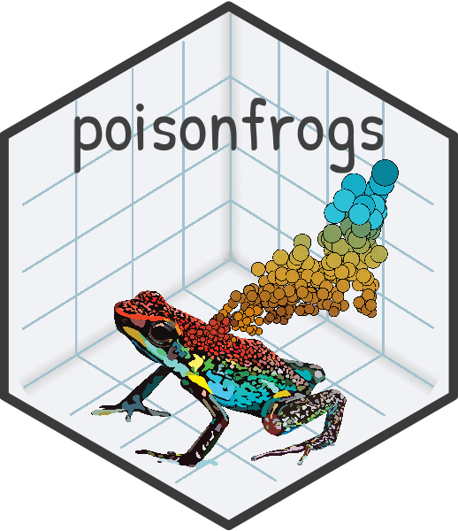

Colour Palettes of Neotropical Poison Frogs
poisonfrogs.RdA collection of color palettes inspired by the enormous diversity of skin colors in Neotropical poison frog species. Suitable for use with ggplot2 and base R graphics.
Author
Maintainer: Camilo Rodríguez camo.rodriguez@gmail.com
Authors:
Lauren O'Connell loconnel@stanford.edu